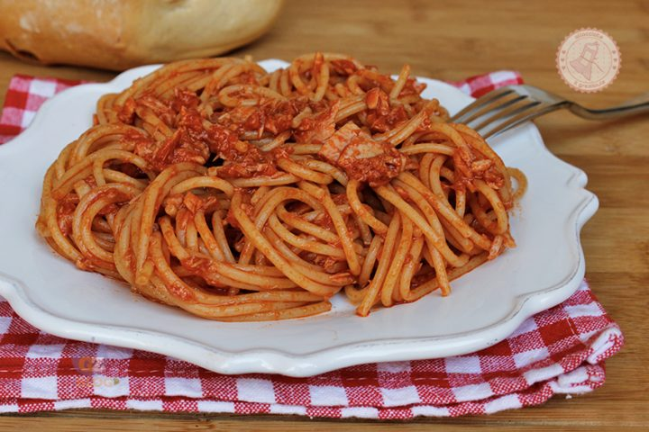

La pasta al tonno ha una storia difficile da individuare anche quando si tratta del pesce in conserva, considerando che le prime «industrie» del tonno nacquero addirittura tra il III e il II secolo a.C. nel Mediterraneo, soprattutto in Grecia, Sicilia, Sardegna, Spagna e Africa del nord. Il commercio del tonno sott’olio ha avuto tuttavia particolare impulso a partire dal XVIII secolo e specialmente a Genova , che lo esportava via mare, mentre la trasformazione a livello industriale si è imposta negli Anni 50 del Novecento, per soddisfare via via un mercato sempre più esigente in termini di qualità e di quantità.
